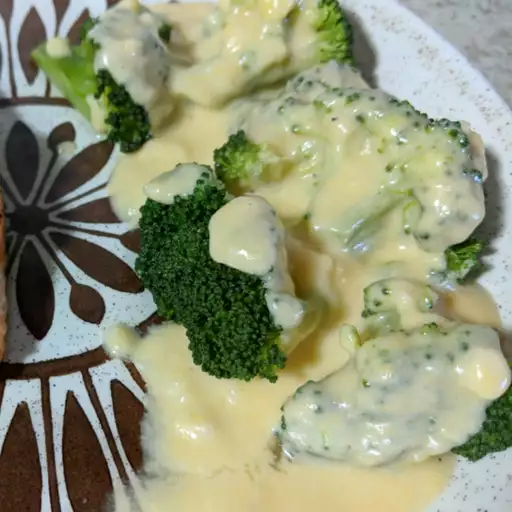

Cheese sauce

Description
This is the basic cheese sauce you know how to do.
I like adding nutmag to it
Use grated cheese and full fat milk
Ingredients
- Full fat milk
- Flour
- Butter/Margarine
- Salt
- Grated cheese(left overs are fine...)
- Nutmag
Steps
- Melt the butter/margarine
- add the flour and mix and toast it to brown a bit
- add salt and
- slowly add the milk(warmed up a little is best)
- Add the cheese
- Take of the heat and let it rest